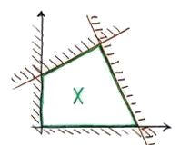
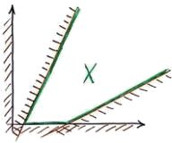
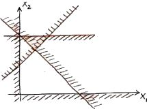
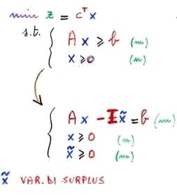

Torna alla pagina di Ricerca Operativa
:: Ricerca Operativa - Programmazione lineare ::
Tutte le immagini di questa pagina sono prese dalle slide del prof Giovanni Righini
Breve introduzione. La programmazione matematica è uno dei metodi più importanti della Ricerca Operativa, l'altro è la simulazione. Si basano entrambi su modelli matematici, ma mentre quest'ultima procede per tentativi, la programmazione matematica si propone di calcolare direttamente la soluzione migliore per ottenere ciò che si è prefissata. I suoi elementi essenziali sono:
Per l'algoritmo risolutivo del problema la soluzione corrisponde a un assegnamento di valori alle variabili. Notare che questi valori possono essere ammissibili o non ammissibili a seconda che rispettino o meno i vincoli dati.
Nei problemi di esistenza il nostro unico scopo è trovare soluzioni ammissibili, mentre nei problemi di ottimizzazione vogliamo trovare una soluzione ottima, cioè quella che massimizza o minimizza la funzione obiettivo.
Bene, ora abbiamo tutto ciò che ci serve per cominciare a parlare della programmazione lineare.
La programmazione lineare (PL) si occupa di problemi decisionali, e si ha quando sia la funzione obiettivo che i vincoli sono funzioni lineari delle variabili. Esistono quattro forme per rappresentare tali problemi, iniziamo da quella generale:

Gli altri elementi che non sono direttamente spiegati in figura sono:
Questa forma è la più grezza e generale possibile (da cui il nome), ed è opportuno applicarvi alcune correzioni. In primo luogo si osservi che avere vincoli di uguaglianza è come dire che ci sono gradi di libertà in meno, cioè è sempre possibile ricavare una variabile in funzione delle altre per poi sostituirla ed eliminarla. Per questo motivo tutti i vincoli di uguaglianza di possono togliere, e ad ogni vincolo tolto corrisponde una variabile in meno.
In secondo luogo possiamo eliminare anche le variabili libere dato che possiamo vederle come differenza di variabili non negative. Se ad esempio abbiamo una variabile libera x, scrivendo che x = y - z otteniamo un numero positivo se y>z e un numero negativo se z>y. Riscrivendo in questo modo le variabili libere potremo gestire solo quelle non negative, guadagnando sicuramente in semplicità ma aggiungendo però una variabile al totale.
Dall'applicazione di queste correzioni si arriva alla forma alle disuguaglianze:
Tutti i vincoli sono in forma di disequazioni, e per quanto riguarda il segno si adottano le seguenti convenzioni:
La programmazione lineare ha un'interpretazione geometrica, utile da conoscere poiché molto intuitiva: la soluzione di un problema di PL è un punto in uno spazio ad n dimensioni (Rn), dove n è il numero di variabili. Per punto si intende quell'insieme di valori che diamo alle variabili, quindi ha precise coordinate nello spazio; in particolare lo spazio è continuo (essendo definito in R), dunque le variabili possono assumere tutti i valori reali.
L'interpretazione geometrica di un vincolo di uguaglianza è un iperpiano (che per due dimensioni è una retta, per tre una superficie piatta, per quattro o più prende il nome generico di iperpiano), mentre un vincolo di disuguaglianza è un semispazio (l'insieme di tutti i punti che stanno da una certa parte rispetto a un iperpiano).
L'intero sistema dei vincoli (quindi sia di uguaglianza che di disuguaglianza) di un problema di programmazione lineare è dato dall'intersezione dei corrispondenti iperpiani e semispazi. Dato però che convertiremo tutti i vincoli di uguaglianza in vincoli di disuguaglianza, tutti gli iperpiani spariscono e ci rimangono semispazi, la cui intersezione è un poliedro.
I semispazi hanno un'altra caratteristica, ovvero sono convessi: presi due punti qualsiasi che apparentengono al semispazio e collegandoli con un segmento, tutti i punti che fanno parte di quel segmento appartengono anch'essi allo stesso semispazio. Poiché l'intersezione di insiemi convessi è convessa, ne deduciamo che anche il poliedro è convesso.
Nella figura successiva saranno riassunti tutti i concetti visti finora, e in particolare chiameremo il poliedro regione ammissibile:
Vediamo alcuni casi particolari di poliedro:
|  Poliedro limitato |  Poliedro illimitato. Si ha quando muovendosi in una certa direzione si arriva all'infinito. |  Poliedro vuoto. Si ha quando dall'intersezione dei vincoli dati non si definisce alcuna regione ammissibile. |
Un poliedro limitato e non vuoto è chiamato politopo.
La funzione obiettivo è rappresentata geometricamente con le curve di livello e la direzione di ottimizzazione. Le curve di livello sono l'insieme di quel luogo di punti che soddisfano l'equazione C * x = z, quindi un insieme di rette (o nel caso generale, di interpiani). Perché parliamo di insieme e non di un'unica retta? Perché al variare del risultato z della funzione obiettivo, la C rimane invariata e quindi si ottiene una retta parallela alla precedente. Avremo in questo modo un fascio di rette parallele (le curve di livello) che si muovono da una parte verso la massimizzazione della funzione obiettivo, e dall'altro verso la minimizzazione. Questa direzione perpendicolare alle rette è chiamata direzione di ottimizzazione, ed è indicata graficamente con una freccia.
Abbiamo finalmente tutti gli strumenti e le conoscenze necessarie per rappresentare geometricamente un problema di programmazione lineare. Inoltre per la convessità del poliedro che rappresenta la regione ammissibile e per la linearità delle curve di livello che rappresentano la funzione obiettivo, possiamo affermare che la soluzione ottima:
Vediamo un esempio riassuntivo:

Ritorniamo ora a vedere il problema da un punto di vista algebrico. La forma standard di un problema di programmazione lineare prevede la ritrasformazione di tutti i vincoli di disuguaglianza in vincoli di uguaglianza, e l'introduzione di nuove variabili. Tali variabili sono chiamate variabili di scarto (slack) o di surplus a seconda di come sono girati i vincoli. Iniziamo a considerare quelle di surplus facendo un esempio:
|  | La figura a sinistra mostra il passaggio da forma alle disuguaglianze a forma standard.
Notare la moltiplicazione delle variabili di surplus per una matrice identità |
Facciamo ora un esempio di utilizzo di variabili di scarto:

| La figura a sinistra mostra il passaggio da forma alle disuguaglianze a forma standard.
Con questa forma invece di dire che |
Tirando le somme, passeremo da un problema con n variabili ed m vincoli di disuguaglianza a un problema con n+m variabili ed m vincoli di uguaglianza. Quindi passando dalla forma alle disuguaglianze a quella standard abbiamo ottenuto un sistema di equazioni con sole condizioni di non negatività.
Breve inciso su una proprietà che si rivelerà fondamentale per i discorsi a venire: ad una variabile nulla corrisponde un vincolo attivo. Un vincolo si dice attivo quando, mentre stiamo ottimizzando, abbiamo raggiunto la frontiera della regione ammissibile ed il vincolo ci sta impedendo di superarla; in altre parole ci troviamo proprio sui suoi punti.
Riprendiamo il discorso di prima: con la forma standard abbiamo raggiunto un sistema ad m equazioni lineari ed n+m incognite, a meno che non abbiamo vincoli ridondanti. Questo significa che avremo - se esiste - esattamente un'unica soluzione solo se riusciremo ad eliminare gli n gradi di libertà, ovvero la differenza tra il numero di variabili ed il numero di vincoli. Per riuscirci possiamo dividere le nostre variabili in due sottoinsiemi, dicendo che ci sono m variabili in base ed n fuori base. Anche la matrice dei vincoli A' (che ha una colonna per ogni variabile) può essere divisa in due sottomatrici, una con le variabili di base e l'altra per quelle fuori base; stesso discorso vale per il vettore x delle variabili.

Possiamo dire che una base è un sottoinsieme delle colonne della matrice dei vincoli A', linearmente indipendenti tra loro, che formano una matrice di dimensioni m x m non singolare chiamata B. Le variabili fuori base sono i rimanenti gradi di libertà.
Possiamo perciò riscrivere il sistema dei vincoli come: B xB + N xN = b ((colonne di base per variabili di base) + (colonne fuori base per variabili fuori base) = vettore dei termini noti)
Se riuscissimo a fissare il valori delle xN, e quindi di quegli n valori che ho in più, ciò che ci resta avrebbe una soluzione univocamente determinata. In altre parole, se tratto gli xN come dati del problema ottengo:

Notare che nella parte destra dell'equazione ho solo dati!
Tutto ciò è molto bello, ma che valori scegliamo per xN? Beh, intanto osserviamo che per ogni scelta che faremo staremo definendo un punto, dal momento che ciò che ci rimane del problema avrà esattamente una soluzione. Noi però stiamo cercando l'ottimalità, quindi non ci interessano tutti i punti ma solo quelli in cui gli n vincoli di disuguaglianza sono attivi, cioè i vertici del poliedro. Avevamo detto infatti che a ogni vincolo attivo corrisponde una variabile nulla, e quali sono quei punti in cui le variabili sono azzerate? Proprio i vertici del poliedro! Le soluzioni ottenute ponendo xN = 0 sono chiamate soluzioni di base e si ottengono come: xB = B-1 b.
Attenzione però! Dobbiamo distinguere tra soluzioni di base ammissibili, quelle che si trovano sui vertici del poliedro, e soluzioni di base non ammissibili, che sono sì originate dall'intersezione di vincoli ma che si trovano al di fuori del poliedro. Graficamente è immediato distinguere una dalle altre, mentre a livello algebrico basta verificare che tutte le variabili di base associate a quella soluzione siano non negative.
Consideriamo questo caso particolare: può capitare che per un vertice di un poliedro passino più di n vincoli, e quindi si avrebbe almeno un vincolo attivo in più rispetto a quelli che ho attivato io azzerando le variabili fuori base. Questa situazione in cui abbiamo una variabile di base nulla (proprio perché corrisponde a un vincolo attivo) si chiama degenerazione, e si dice che la soluzione è degenere.
Il problema di una soluzione degenere è che possiamo ottenerla con basi diverse, perché avremo almeno una variabile in più rispetto a quelle fuori base che ha valore 0. Consideriamo ad esempio una soluzione che ha questo vettore delle x = [2 3 0 0 0] , dove in grassetto sono indicate le variabili basiche; abbiamo almeno tre basi diverse che permettono di ottenere la soluzione, ovvero: {1,2,3} {1,2,4} {1,2,5}.
Quando parleremo dell'algoritmo del simplesso nelle [[prossime lezioni->RO-Algoritmo del simplesso] capiremo perché la degenerazione è cosa negativa e da evitare. Per ora ci basti sapere che comporta uno spreco di computazione.
Quanto abbiamo appreso finora è più che sufficiente per enunciare il teorema fondamentale della programmazione lineare: dato un problema lineare in forma standard, quindi {min CTx : Ax = b, x>=0 }, con A di rango m (quindi senza vincoli ridondanti):
Che conseguenze ha questo teorema? Che il problema lineare non impossibile o illimitato può essere risolto considerando solo le soluzioni di base, quindi solo un numero finito di punti che appartengono al poliedro; passiamo così da un problema continuo a uno di tipo di combinatorio, che pur essendo di dimensioni molto più contenute cresce comunque rapidamente all'aumentare di vincoli e variabili.
Ora che sappiamo tutto ciò che dovevamo sapere sulla programmazione lineare, che algoritmo possiamo utilizzare per risolvere questo tipo di problemi? Noi studieremo l' algoritmo del simplesso, inventato da Dantzig nel 1947, sicuramente il più importante da un punto di vista storico anche se non l'unico.
Qualche anticipazione. L'algoritmo del simplesso garantisce l'ottimalità attraverso un processo iterativo di miglioramento che si sposta da un vertice all'altro. Ciò vuol dire che ad ogni iterazione la soluzione o viene lasciata invariata o viene migliorata, e dato che il poliedro è convesso non si può che terminare nella soluzione ottima. Non è polinomiale (nel caso peggiore ha complessità esponenziale), ma nella pratica - anche grazie a costanti raffinamenti - si dimostra più efficiente di questa classe di algoritmi. Infine, un prerequisito che impareremo a conoscere nella prossima lezione è che il problema deve essere espresso in forma canonica. La spieghiamo ora? Ovviamente no, così aumenta la suspance. E che suspance.